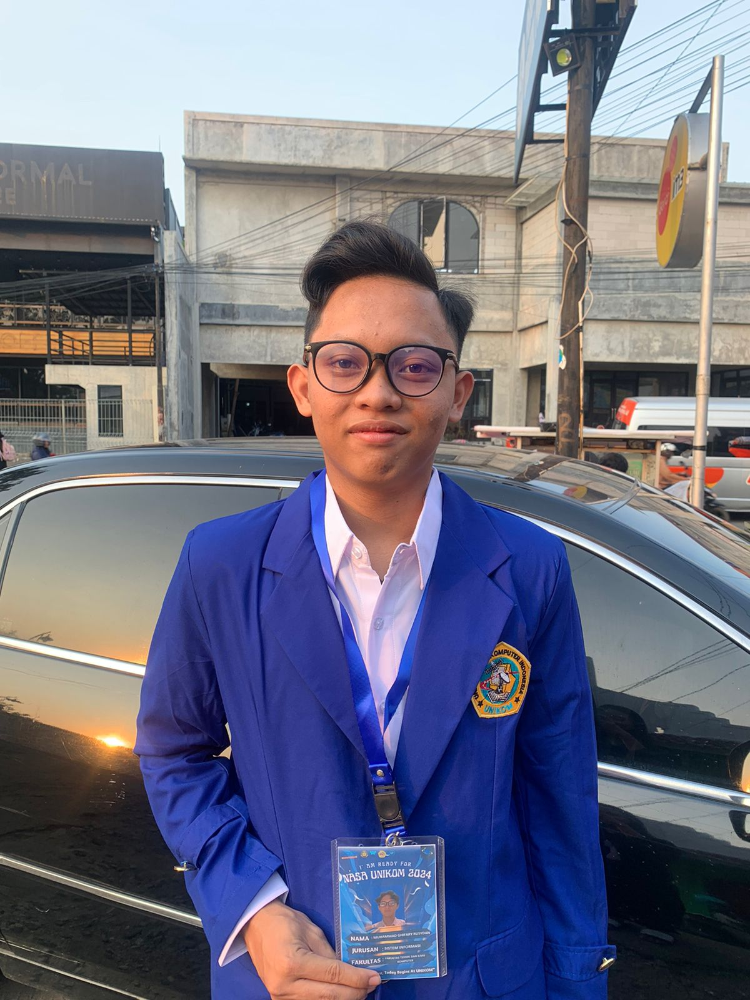

| Tempat, Tanggal Lahir | : Kota Purwakarta, 09 Oktober 2005 |
| Alamat | : Perum Oesman Singawinata Blok J 26, Jl. Cendana 1, Kota Purwakarta |
| : ghifaryr29@gmail.com | |
| No. Telepon | : 0859-7532-0038 |
Saya adalah individu yang memiliki semangat tinggi, bertanggung jawab, dan cepat belajar, terutama dalam bidang teknologi dan pengembangan web.
Terima kasih telah membaca CV saya.